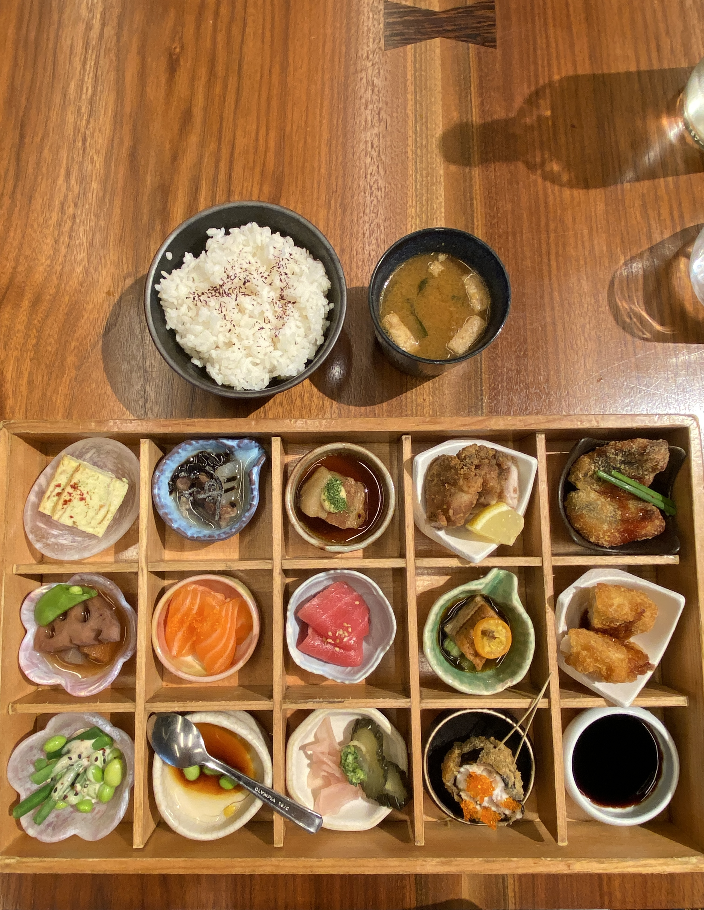
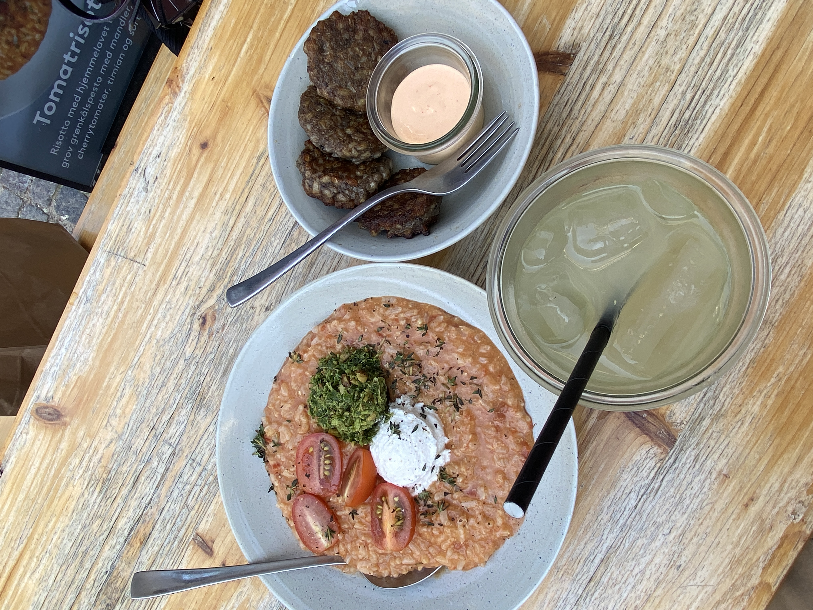

Foodie Diary
a documentation of some excellent eats, across the world.
Hyde Park Farmers' Market, Chicago USA
23 September 2023
smoked salmon, tomato, mozzarella, capers on sourdough bread.

Akira at Japan House,
London UK
22 August 2023
assorted sushi and sashmi bento box. very yummy and very pretty.
